Irgendwann
Der Anfang, ungefährNiemand erinnert sich mehr ganz genau, wann es losging — nur, dass an einem Nachmittag ein Escape Room gebucht wurde und niemand so recht daran glaubte, dass wir es schaffen. Eine Stunde, fünf Theorien gleichzeitig, ein Team, das lauter diskutiert als denkt. Am Ende hat's gereicht, mit ein paar Minuten Puffer. Seither ist "wir sollten das öfter machen" kein leeres Versprechen mehr.

2023
Die ersten festgehaltenen AusflügeEin Frühling am Wasser, ein Sommer mit warmen Abenden — 2023 war das Jahr, in dem aus einzelnen Treffen langsam eine Gewohnheit wurde. Nichts Grosses, nichts Geplantes. Einfach öfter Zeit zusammen.


2025
Ein Jahr voller Anlässe2025 war dicht: Frühlingsausflüge, ein langer Sommer, ein Herbst, der sich kaum wie einer anfühlte. Vier Jahreszeiten, immer mit dabei — und mittendrin die Idee, die nächste grosse Reise gemeinsam zu planen.


2026
Der ReiseberichtDer bisher grösste Programmpunkt: neun Tage Sardinien, quer über die Insel. Hier das komplette Reisetagebuch, Tag für Tag. Zum ursprünglichen Reiseprogramm →
Tag 1
Anreise
Ankunft & erstes Hotel
+
Anreise
Ankunft & erstes HotelDer Flug verlief angenehm und ohne Zwischenfälle. Kaum gelandet, wurden wir bereits von der Reiseleitung in Empfang genommen und wie VIPs direkt zur Autovermietung begleitet — kein Anstehen, keine Wartezeit. Als kleine Überraschung gab es obendrauf ein kostenloses Upgrade auf ein grösseres Auto. Danach ging es direkt ins Hotel, wo wir müde, aber zufrieden ins Bett fielen.
Tag 2
Porto Cervo & San Pantaleo
Yachthafen, Stella Maris, Altstadtgassen
+
Porto Cervo & San Pantaleo
Yachthafen, Stella Maris, AltstadtgassenDem Programm folgend ging es zuerst zum Yachthafen von Porto Cervo, danach zur weissen Kirche Stella Maris. Die Hitze war an diesem Tag drückend und schwül. Der geplante Besuch beim Leuchtturm fiel leider aus — er ist dauerhaft geschlossen. Als Ausgleich ging es weiter nach San Pantaleo, wo wir durch die kleinen Gassen flanierten und dort auch zu Mittag assen.
Am Nachmittag liessen wir es ruhig angehen: zurück ins Hotel, an den Pool, ein gutes Buch und ein paar Drinks.
Am Abend assen wir in einer kleinen Pizzeria, eine persönliche Empfehlung der Reiseleitung — praktischerweise gehört sie dem Ehemann der Reiseleiterin. Die Pizza war wirklich sehr lecker.
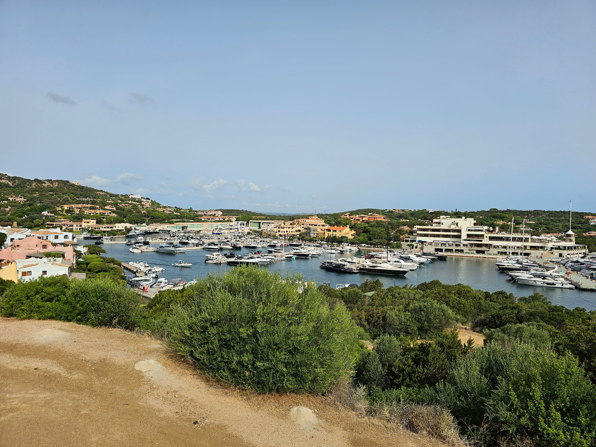
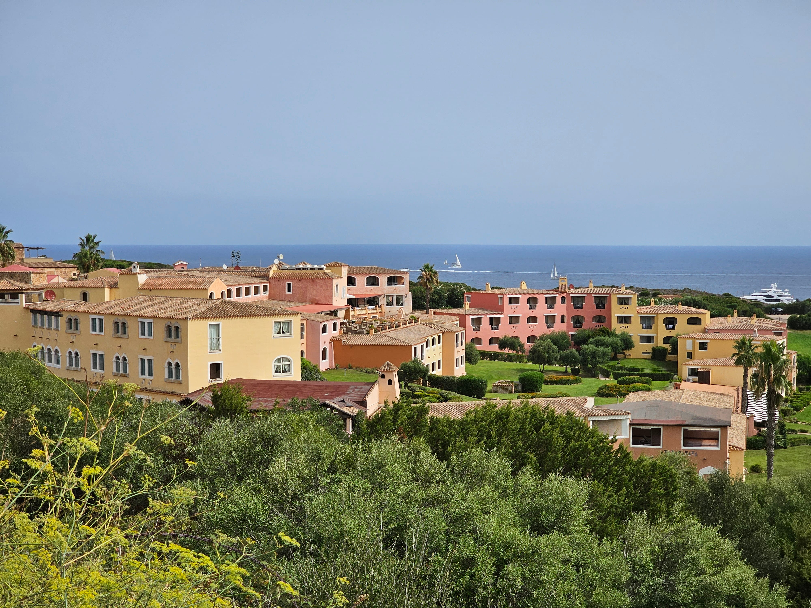
Tag 3
Bärenfelsen, Nuraghe & Alghero
Palau → Castelsardo → Alghero
+
Bärenfelsen, Nuraghe & Alghero
Palau → Castelsardo → AlgheroDer Tag begann mit dem Aufstieg zum Bärenfelsen. Auch hier wieder drückende Hitze, aber belohnt mit einer beeindruckenden 360-Grad-Rundumsicht. Anschliessend besichtigten wir eine Nuraghe, eine Siedlung aus der Bronzezeit. Unterwegs querten sogar wilde Schildkröten die Fahrbahn — ein unerwartet schöner Moment.
Eine kleine Randbeobachtung zum Fahrstil der Italiener hat sich uns eingeprägt: Bei erlaubten 30 km/h wurden wir von jemandem mit gefühlten 80 überholt, bei 50 km/h fahren manche munter 90. Auch beim Parkieren scheint fast alles erlaubt — auf dem Zebrastreifen, in einer Einfahrt, oder gleich mitten auf der Strasse in zweiter oder dritter Reihe.
In Castelsardo legten wir einen kurzen Stopp ein, gönnten uns einen Snack und deckten uns mit Wasser ein. Danach ging die Fahrt weiter nach Alghero — die Parkplatzsuche dort entpuppte sich als kleines Abenteuer, gefühlt 15 bis 30 Minuten, bis sich endlich etwas fand. Am Abend bummelten wir durch die Altstadt, assen in einer gemütlichen Trattoria zu Abend, natürlich mit dem obligatorischen Gelati zum Abschluss.
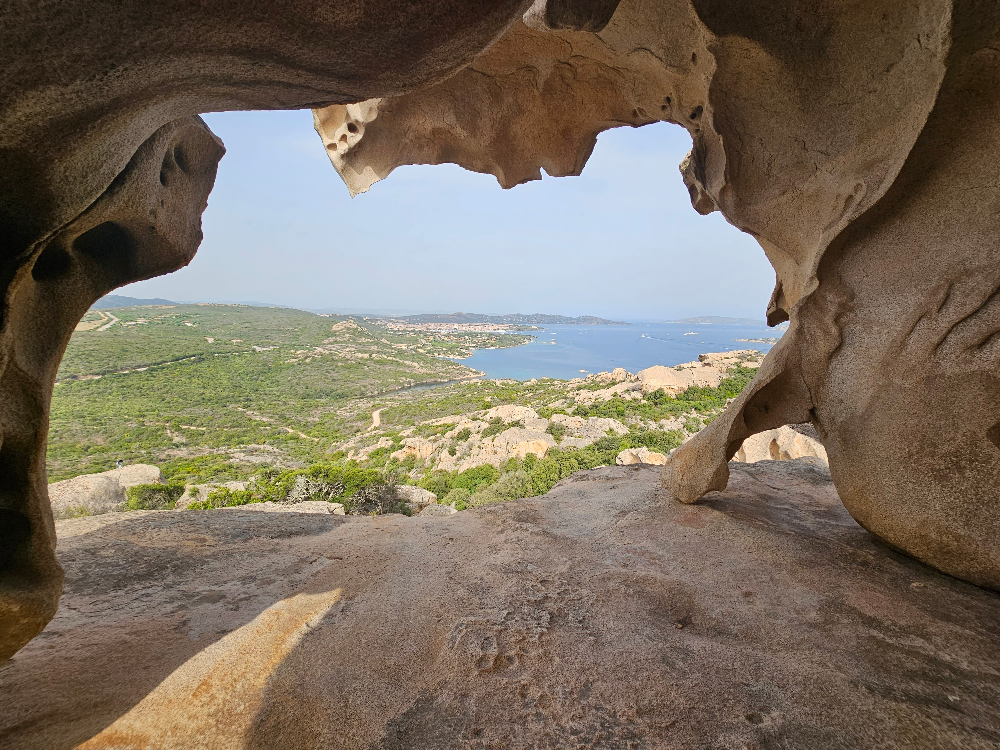
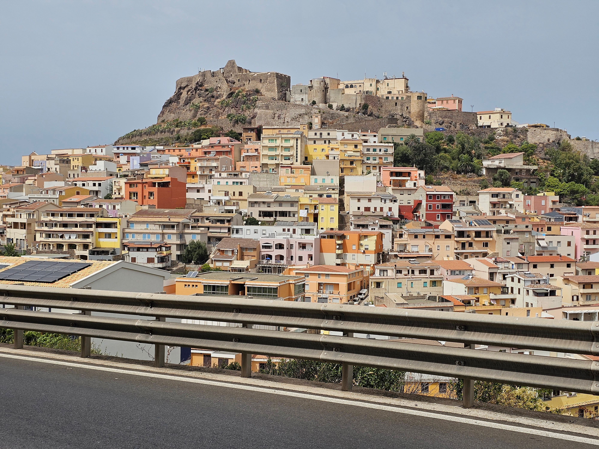
Tag 4
Alghero & Grotta di Nettuno
Bootsausflug, Strand, Sonnenuntergang
+
Alghero & Grotta di Nettuno
Bootsausflug, Strand, SonnenuntergangDas Frühstück genossen wir mit Blick über den Yachthafen und Teile der Stadt Alghero. Danach stand ein Bootsausflug zur Grotta di Nettuno auf dem Programm. Obwohl die Tour eigentlich ausgebucht war, gelang es, sich durchzufragen und doch noch Tickets für Boot und Grotte zu ergattern. Der Nachmittag klang mit einer kleinen Siesta im Hotel aus.
Danach spazierten wir an den Strand und stiegen ins Meer — bei angenehmen 28 Grad übrigens richtig warm zum Schwimmen — und liessen uns anschliessend von der Sonne trocknen. Zurück im Hotel ging es in die Aussichtsbar "Blau" für einen feinen Drink.
Am Abend haben wir Alghero nochmals ausgiebig zu Fuss erkundet: die Gassen, die kleinen Läden, die Restaurants, die Künstler und nicht zuletzt die Katzen, die überall herumstreunen. Dazu genossen wir die Aussicht aufs Meer und einen wunderschönen Sonnenuntergang, bevor wir den Abend in einer typischen Trattoria ausklingen liessen.
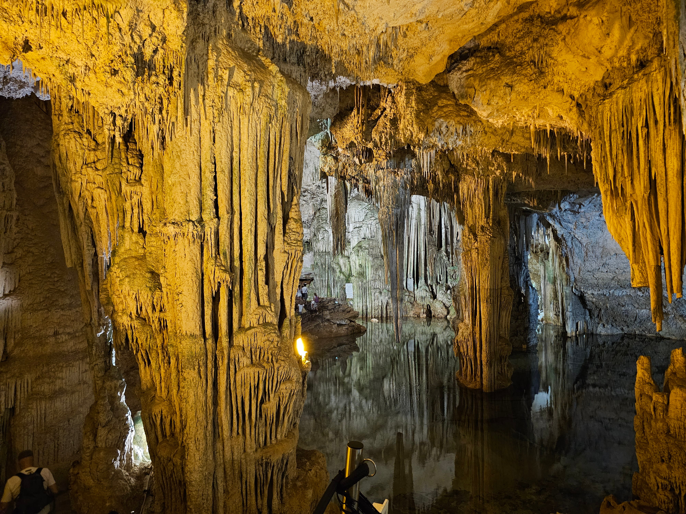
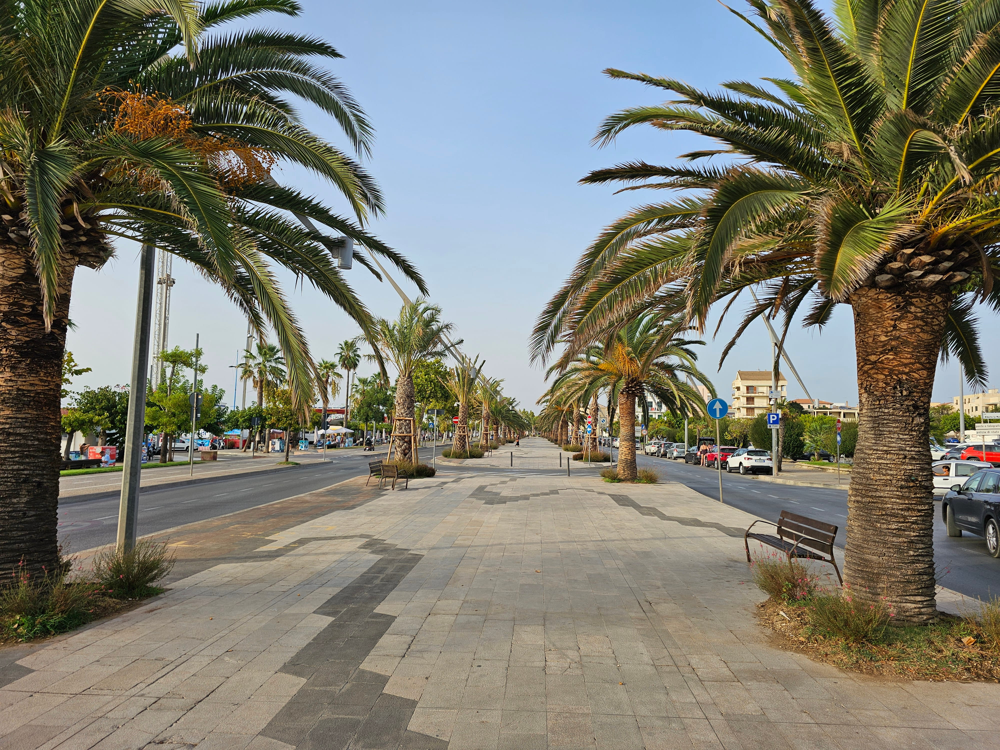
Tag 5
Entlang der Küste nach Bosa, weiter ins Bergland
Bosa → Aritzo
+
Entlang der Küste nach Bosa, weiter ins Bergland
Bosa → AritzoDie Fahrt führte uns über die SP105 immer der Küste entlang bis nach Bosa. Der Ausblick und die Küstenlinie sind schlicht wunderschön — es lohnt sich wirklich, unterwegs mehrere Male anzuhalten, um die Aussicht in Ruhe zu geniessen.
In Bosa angekommen, schauten wir uns die kleinen Gässchen, die Läden und das übrige Treiben des Städtchens an. Danach ging die Fahrt weiter durch bergiges Gebiet zu unserem nächsten Hotel, einem romantischen Haus in Aritzo, wo wir nun die spürbar kühlere Land- und Bergluft geniessen.
Dort schwammen wir im kühlen Bergquellwasser — herrlich erfrischend. Anschliessend liessen wir uns beim Sonnenbaden aufwärmen; es ist zwar spürbar kühler hier als sonst auf Sardinien, aber immer noch angenehm warm genug.
Das Abendessen glich danach einem kleinen Abenteuer für sich: Im ländlichen Hotel spricht niemand Englisch, nur Italienisch — wir umgekehrt kein Wort Italienisch. Dazu kamen die wirklich speziellen, nicht ganz leicht zu übersetzenden Menüs. Über 30 Tische standen fertig eingedeckt bereit — sowohl drinnen im Saal als auch draussen —, wir entschieden uns für draussen und waren dort die einzigen Gäste. Quasi mit eigenem Privatkellner durften wir gemütlich bei Sonnenuntergang tafeln. Dank des etwas kühleren Klimas schliefen wir danach ausgesprochen gut.
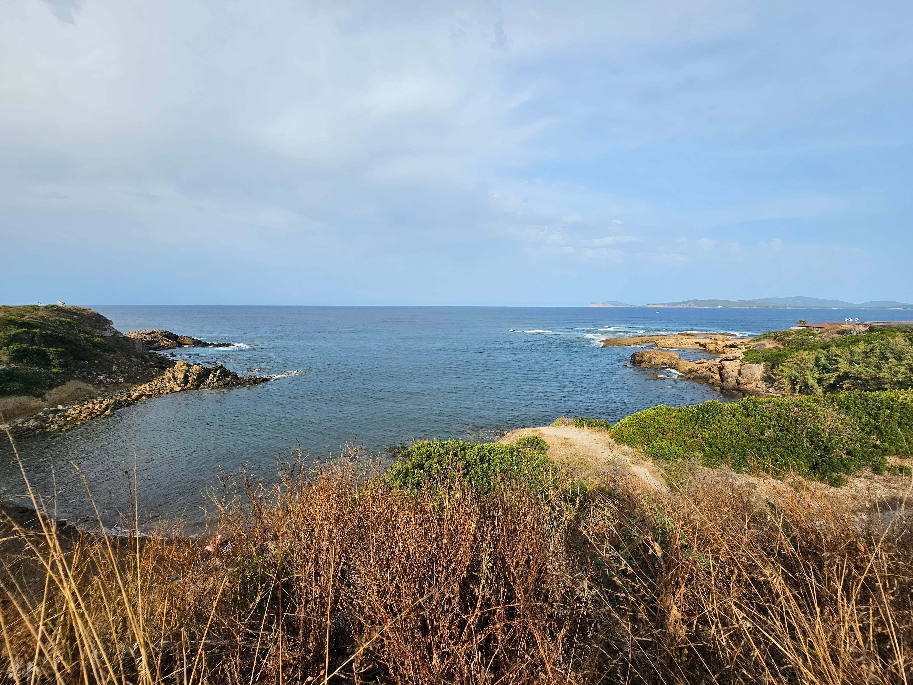
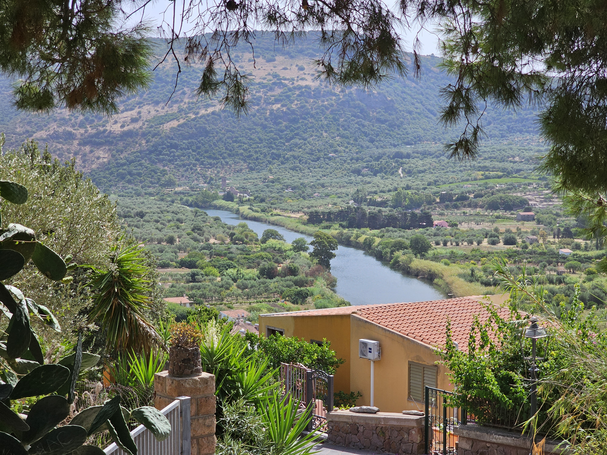
Tag 6
Panoramastrasse, Bari Sardo & Strandtag
Bari Sardo → Arbatax
+
Panoramastrasse, Bari Sardo & Strandtag
Bari Sardo → ArbataxDie Fahrt führte uns über eine wunderschöne Panoramastrasse durch Wälder und Pinienhaine bis nach Bari Sardo an der Ostküste. Unterwegs kreuzten allerhand Tiere unseren Weg: wilde Kühe, Pferde, ein Reh und sogar eine Wildsau, die nur knapp vor dem Auto über die Strasse schlenderte, bevor sie im Gebüsch verschwand.
Dabei lernten wir auch gleich eine weitere Facette der italienischen Verkehrsregeln kennen: Parkieren mitten im Kreisverkehr scheint durchaus "erlaubt" zu sein — immerhin hat es dort ja auch Platz.
Am Ziel angekommen, wählten wir den schönen Sandstrand Spiaggia di Bucca e Strumpu zum Baden aus. Das Wasser war herrlich warm, gefühlte 30 Grad, dazu schöne Pinienwälder direkt am Strand, die für angenehmen Schatten sorgten, und ein warmer Wind. In einem kleinen Strandcafé gönnten wir uns eine Kleinigkeit zu essen und trinken, badeten etwas und ruhten uns aus. Kurz nachdem wir aus dem Meer gestiegen waren, wurde allerdings die rote Flagge gehisst — gefährliche Strömungen hatten sich gebildet.
Danach fuhren wir weiter zu unserem nächsten Hotel. Nach einer kurzen Siesta spazierten wir zum Wahrzeichen von Arbatax, einem roten Felsen mit einer interessanten Steinformation. Danach drehten wir eine Runde im Pool, gefolgt von einer weiteren kleinen Siesta. Am Abend spazierten wir nochmals in die Stadt hinein, schauten dem Meer und der Brandung zu und liessen den Tag in einer Pizzeria bei einem feinen Abendessen ausklingen.
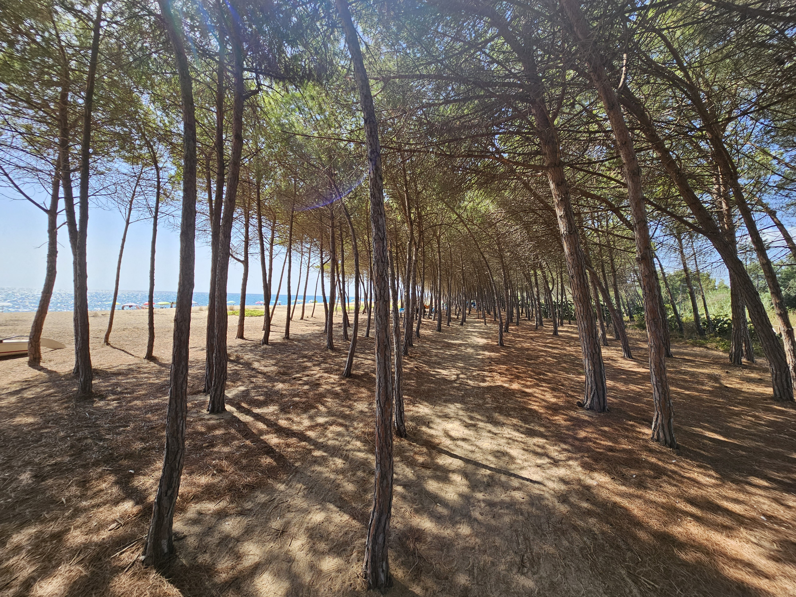
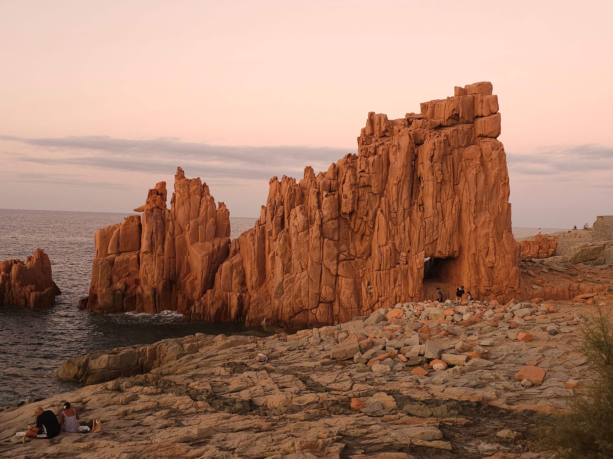
Tag 7
Wilde Küste, verlassener Leuchtturm & Ankunft im Resort
Spontane Küstenroute Richtung Süden
+
Wilde Küste, verlassener Leuchtturm & Ankunft im Resort
Spontane Küstenroute Richtung SüdenNach dem Abschied von unserem vierten Hotel machten wir uns auf den Weg weiter Richtung Süden — etwas abweichend vom ursprünglichen Plan hielten wir uns dabei möglichst nah an der Küste. Unser erstes Ziel war ein wunderschöner Sandstrand mit kristallklarem Wasser. Der Weg dorthin führte über etwa einen Kilometer extrem sandige und buckelige Piste, die uns ordentlich durchschüttelte — jeder Offroad-Fahrer hätte vor uns salutiert, während wir, eingehüllt in eine dichte Sandwolke, tapfer unsere Spur zogen. Ein echtes kleines Abenteuer, belohnt mit kristallklarem Wasser und einem Bad, das zum absoluten Highlight wurde.
Danach wollten wir noch zu einem verlassenen Leuchtturm weiterfahren, mussten aber auf halbem Weg aufgeben und rückwärts wenden — die Bodenfreiheit unseres Autos reichte bei Weitem nicht aus. Selbst Offroad-Jeeps kehrten dort um. Zu Fuss war es uns bei diesen Temperaturen zu weit, also entschieden wir uns, direkt zum letzten Hotel weiterzufahren. Rund anderthalb Stunden zu früh kamen wir an, doch zum Glück war unser Zimmer bereits bezugsbereit.
Wir richteten uns ein, erkundeten den Park ein wenig und gingen dann an den Strand zum Schwimmen — das Wasser war so herrlich, dass wir am liebsten gar nicht mehr herausgekommen wären.
Im Vergleich zu den letzten, deutlich kleineren Hotels, die beim Essen mehr Charme versprühten, bietet dieses zum Abendessen ein grosses Buffet, an dem gleichzeitig rund 200 Personen Platz finden. Das Essen selbst ist zwar sehr fein, der gemütliche Charme der Vortage fehlt hier aber trotzdem etwas. Dafür gab es Live-Musik, und der Rest der Anlage — Pool, Strand, Meer und die vielen Möglichkeiten — ist absolut top.
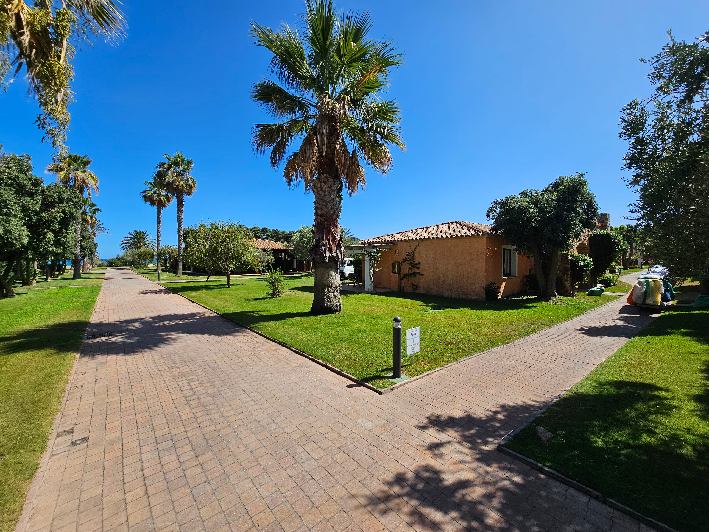
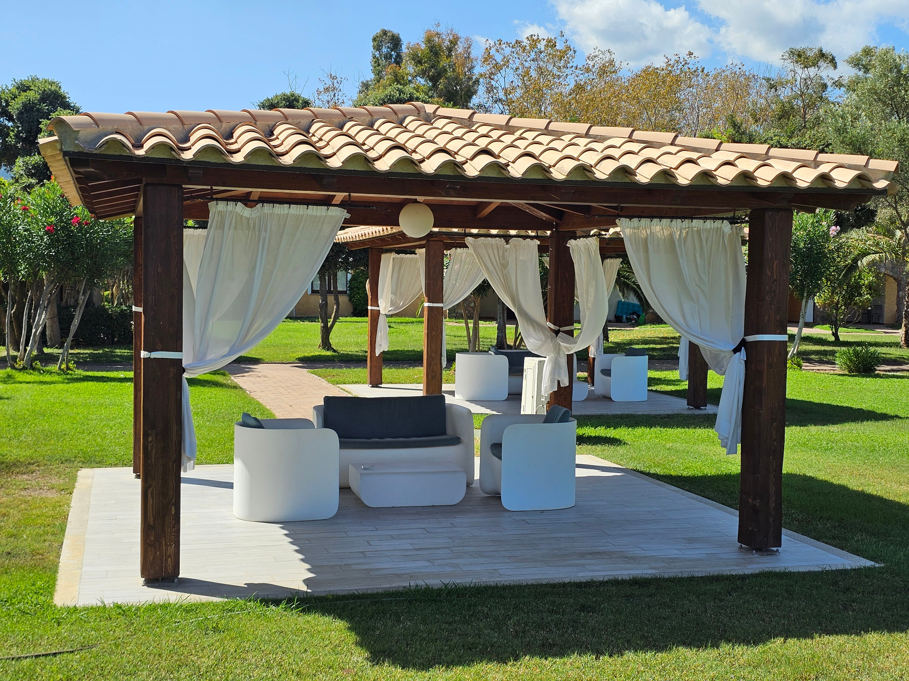
Tag 8
Bewusster Ruhetag im Resort
Pool, Strand, Meer und Geniessen
+
Bewusster Ruhetag im Resort
Pool, Strand, Meer und GeniessenHeute stand ganz bewusst mal keine Fahrt irgendwohin auf dem Programm. Wir gönnten dem Auto — und vor allem uns selbst — etwas Ruhe. Der Plan für den Tag war denkbar einfach: Pool, Strand, Meer und Geniessen.
Das Auto hatte gestern bei der Hitze offenbar auch langsam genug: Nur rund 100 Meter vor dem Parkplatz beim Hotel zeigte es plötzlich einen Fehler an und verlangte einen Service. Da war für uns klar — es ist wohl besser, wenn auch das Auto heute einen Ruhetag bekommt.
Der Strandtag war wunderbar. Wir genossen Pool, Strand und Meer ausgiebig und assen zwischendurch eine Kleinigkeit im Strandbistro. Am Abend ging es nochmals ins Restaurant mit Buffet.
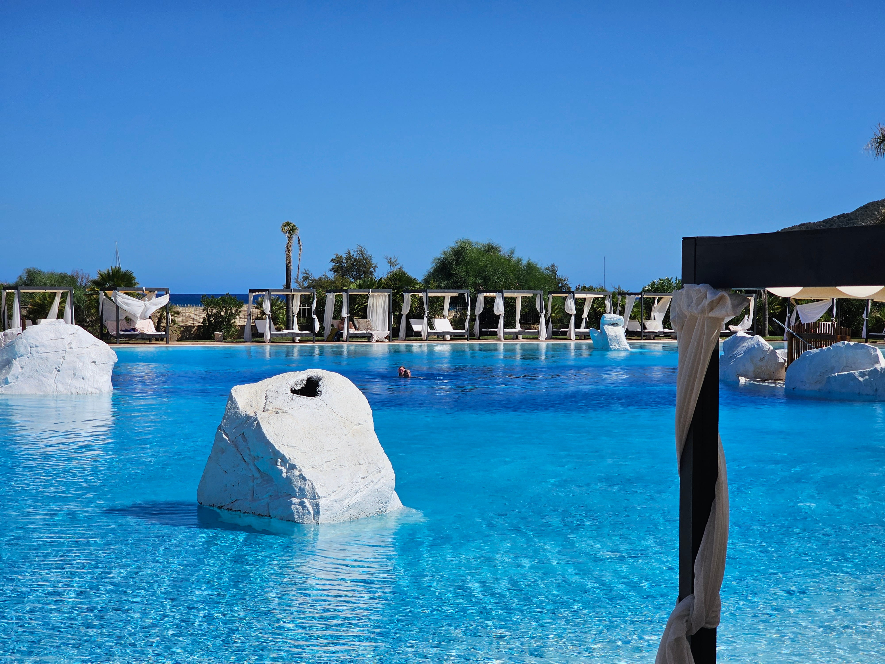
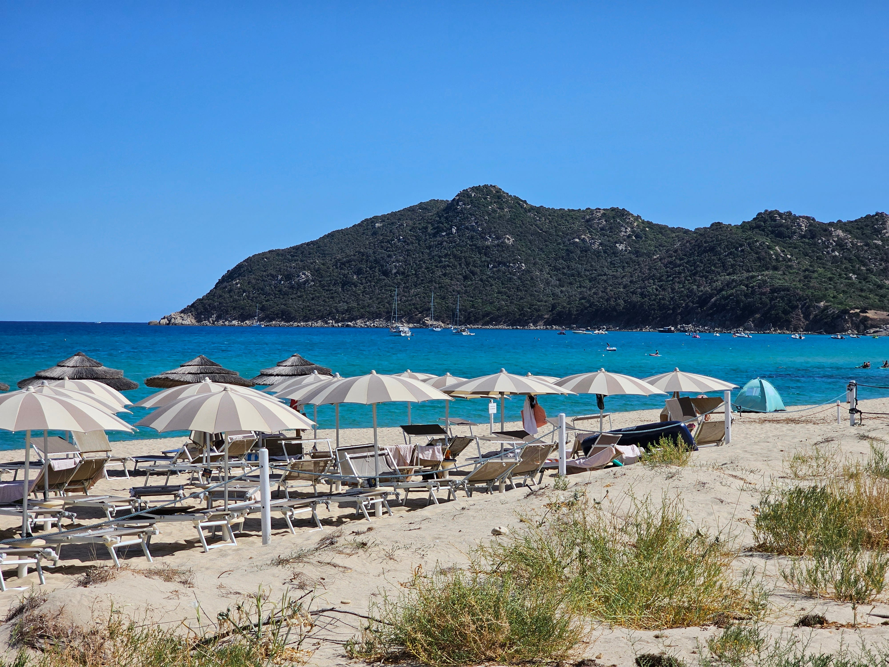
Tag 9
Heimreise
Castiadas → Cagliari → Zürich
+
Heimreise
Castiadas → Cagliari → ZürichHeute hiess es früh aufstehen — um 5:30 Uhr klingelte der Wecker, und bereits um 6 Uhr fuhren wir los Richtung Flughafen. Zuvor stand noch der Check-out an, inklusive eines Lunchpakets für unterwegs.
Auf dem Weg zum Flughafen tankten wir das Auto nochmals voll. Dann hiess es Abschied nehmen von der wunderschönen Insel — unser Flug brachte uns wieder Richtung Heimat.
Es war wirklich sehr schön hier!
Neun Tage, unzählige Eindrücke — damit endet unsere Reise durch Sardinien. Alle Fotos gibt's demnächst auch in der Galerie.
Zum Reiseprogramm